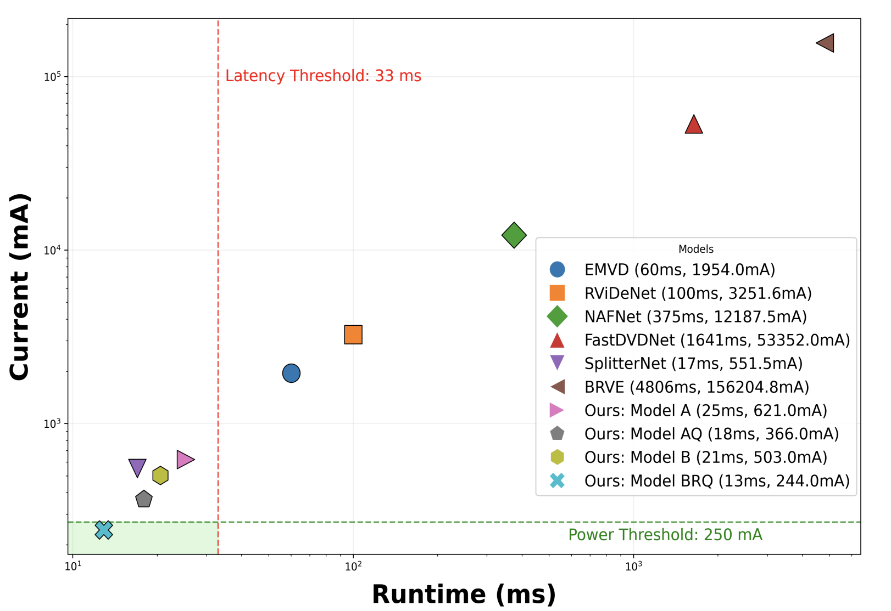
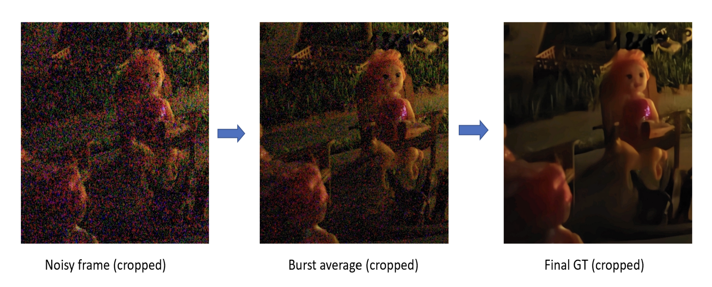
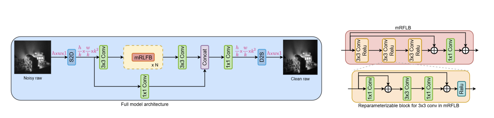
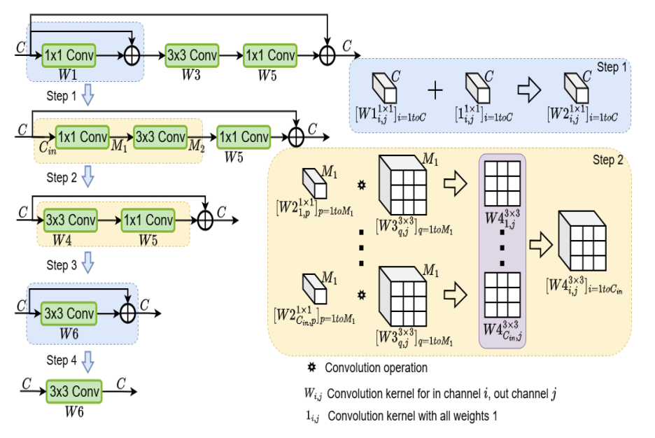
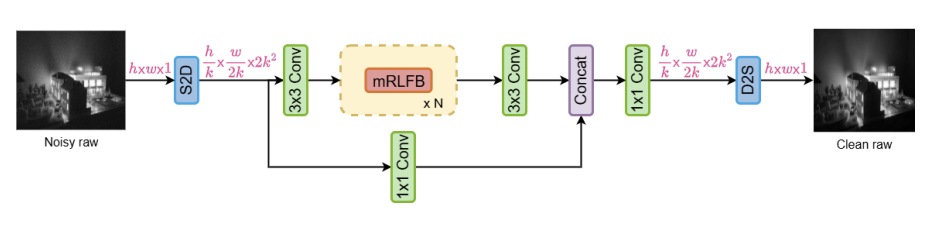
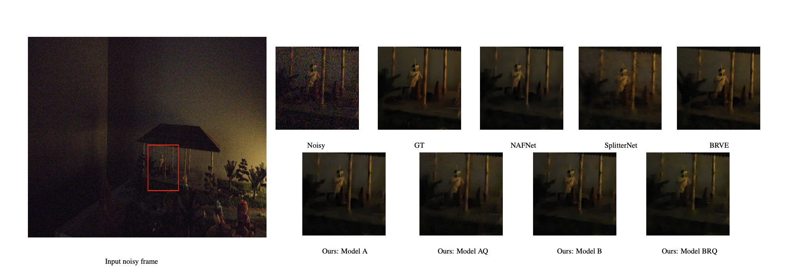

Abstract
Recent advancements in deep neural networks have significantly improved visual quality of camera captures under low-light conditions, yet extreme low-light video quality remains inadequate for real-time Ultra HD mobile capture. Existing models are often too expensive for strict latency and power budgets. This work presents a comprehensive framework for real-time raw-to-raw denoising of extreme low-light UHD videos, designed for seamless integration into existing ISP pipelines. The paper combines a diverse raw data creation methodology, a low-complexity architecture tailored to mobile compute elements, and deployment-focused optimizations including reparameterization, restructuring, and quantization.
Why this problem is hard
Mobile low-light video enhancement must satisfy quality, latency, power, and ISP compatibility at the same time.

Strict deployment budget
For 30 fps video, the pipeline must stay within real-time latency and tight current limits, which rules out many restoration models.
Extreme low-light degradation
At illumination below 1 lux, raw sensor noise increases sharply while scene details are heavily suppressed.
Data scarcity
Paired real raw video data is difficult to capture, especially for UHD, temporal consistency, and sensor-specific conditions.
Method overview
A practical research-to-product pipeline: dataset design, ISP-compatible architecture, and deployment optimization.
Ground-truth preparation
Controlled raw capture and multi-stage denoising are used to form stronger supervision for training under extreme low-light conditions.
Efficient base architecture
Space-to-Depth reduces spatial cost while mobile residual local feature blocks preserve restoration quality.
Deployment optimization
Distillation, structural reparameterization, spatial restructuring, and quantization bring the model into a product-ready operating range.




Results

BibTeX
@inproceedings{raw2rawcvpr26,
title={Efficient Real-Time Raw-to-Raw Denoising for Extreme Low-Light Ultra HD Video on Mobile Devices},
author={Charantej Reddy Pochimireddy, Subhasmita Sahoo, Apoorva Verma, Palavalli Shyam, Swapnil Malviya, Sarvesh, Raj Narayana Gadde},
booktitle={Proceedings of the IEEE/CVF Conference on Computer Vision and Pattern Recognition (CVPR)},
year={2026}
}